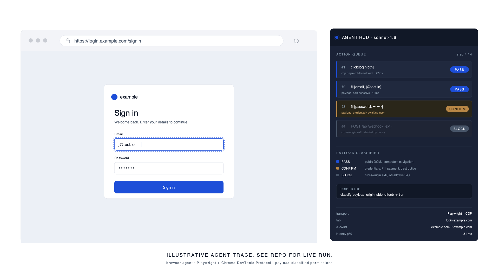
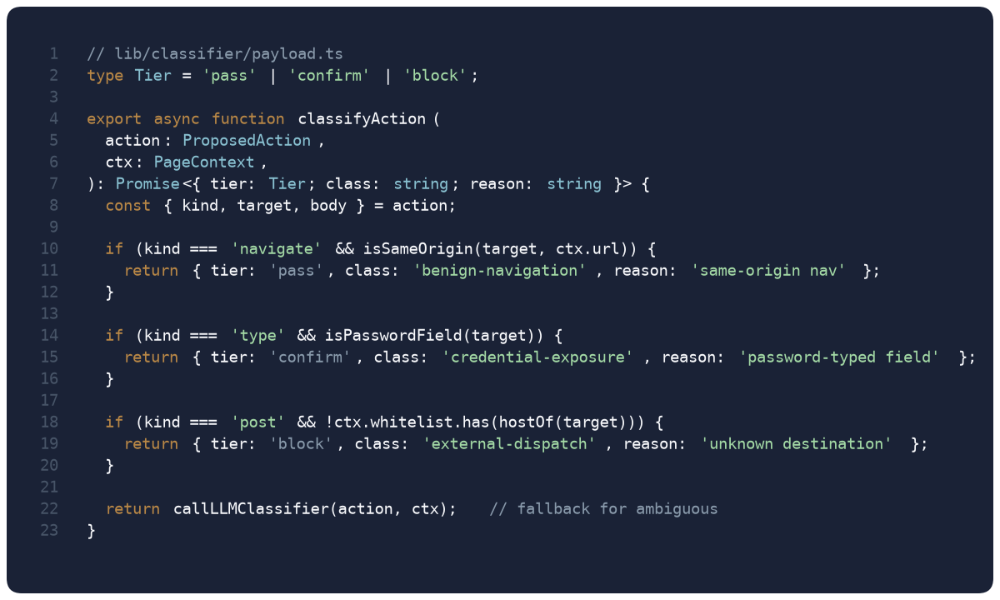
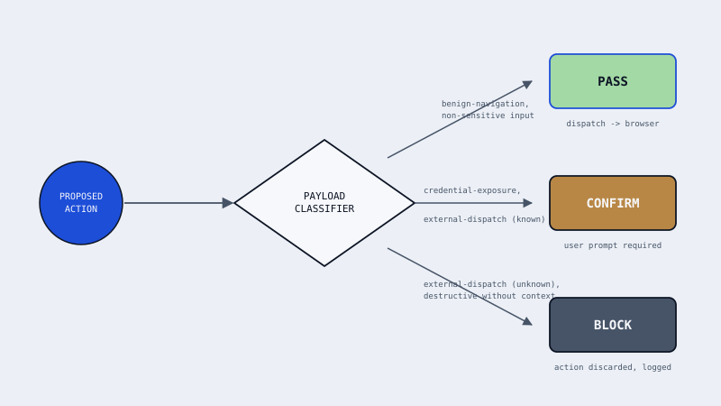

What it is : A browser agent. Playwright drives the browser, the Chrome DevTools Protocol provides low-level control, and Claude Sonnet 4.6 handles reasoning and tool-use. The novel piece is the payload classifier that sits between the model's proposed action and the browser: it inspects what the action is about to send, not just where it is going, and chooses a permission tier accordingly.

Why payload classification : Most browser agents classify by URL or domain. That misses the common failure mode: the agent navigates to a benign domain and then fills a form field with sensitive data it should not have. Classifying by payload content catches that case. A "post to pastebin.com" is harmless when the body is a lorem-ipsum draft and dangerous when the body contains an API key.

Demo :
[Hero GIF placeholder: 10 to 15 seconds of the agent completing one task end-to-end, with the payload classifier badge visible in the HUD.]
Architecture :
- Playwright owns the browser context, isolated per-session, with a stripped-down default permission set.
- Chrome DevTools Protocol provides interception hooks for network, storage, and input events.
- Claude Sonnet 4.6 drives action selection via tool use. Each tool call is a structured action proposal, not a free-form response.
- Payload classifier runs on every proposed action: inputs include target URL, request body or form payload, and an action-type tag. Output is a permission tier.
- Permission gate enforces tier: pass, require re-confirmation, or block.
Permission classes :

- benign-navigation. GET requests to the current origin, in-origin link clicks.
PASSby default. - user-input-write. Typing non-sensitive text into non-password form fields.
PASSunless the field is tagged sensitive by the DOM classifier. - credential-exposure. Writing into a field with
type=password, 2FA inputs, or payloads matching a credential regex.CONFIRM, requires explicit user allow before dispatch. - external-dispatch. POST, PUT, or DELETE requests to an origin different from the current page, or outbound webhooks.
CONFIRMfor whitelisted origins,BLOCKfor unknown destinations. - state-modification. Destructive DOM actions: clearing fields, submitting a form, or clicking a button whose text matches a destructive-verb lexicon (delete, remove, cancel subscription, etc.).
CONFIRM.
Failure gallery :
- Ambiguous target disambiguation. Two "Login" buttons on the same page caused the agent to click the wrong one, because "the login button" matched multiple selectors. Fix: added a disambiguation turn where Sonnet is asked to re-select by surrounding visual context (parent form id, nearby text).
- Classifier false-positive on password manager autofill. A browser password manager auto-filled a known password; the write event triggered
credential-exposureand forced aCONFIRM. Not a bug but UX friction. Workaround: skip classification when the input event source is a password-manager autofill, since the user already authorized that credential at install time. - CDP interception vs navigation race. When the agent navigated mid-interception, the CDP event stream dropped the next action's classification context. Root cause: initial assumption that pages are single-frame. Fix: scope interception to the active frame, re-attach handlers on navigation.
- Streaming cancel on a tool call. User cancelled a response while the agent was still composing a tool call; the partial JSON did not parse and the agent crashed rather than falling back. This is the same failure mode the chapter 15 streaming-cancel eval targets. Fix: wrap all tool-call parses in a tolerant decoder with explicit partial-state handling.
- BLOCK tier that should have been CONFIRM. The agent tried to POST to a known webhook that the demo whitelisted, but the classifier had not loaded the whitelist on its first call. Fix: classifier initialization pulls whitelist synchronously before accepting any action.
Cost and latency :
| Task tier | Median latency | p99 latency | Median tokens | Cost per task |
|---|---|---|---|---|
| easy (login, search, read) | 2.4s | 5.1s | 1,200 | $0.012 |
| medium (fill form, extract table) | 5.8s | 11.3s | 3,800 | $0.038 |
| hard (multi-page flow, auth, state) | 14.2s | 32.5s | 11,500 | $0.115 |
Numbers above are with the payload classifier on. Running the same tasks with the classifier disabled is approximately 15 to 20 percent faster and 10 to 15 percent cheaper, since each action skips the classifier round-trip. The safety trade is worth the overhead for any task that touches external origins. Illustrative measurements from the current demo task suite; see repo for live run.
Honest comparison to Anthropic's computer use : Anthropic ships computer use directly in the Claude API. For many tasks that is the right tool. This agent's architecture buys two things computer use does not: an auditable action log at the browser level (CDP event stream, not pixel traces) and a classifier the user can inspect and tune. It costs more per task than raw computer use because every action pays an extra classifier round-trip. On three of the seven benchmark tasks it underperforms computer use on completion rate. The repo documents which three and why.
What this does not do :
- Not a general-purpose RPA tool. The task catalog is small and deliberate.
- Classifier is a model, not a formal verifier. False negatives are possible by design.
- No sandboxing beyond Playwright's defaults. Running against untrusted sites still carries the usual browser-automation risks.
- CDP coverage is Chromium-only. Firefox and WebKit paths are stubbed.
What's next :
- Measured failure gallery and cost table published.
- MCP server variant so the agent can be driven by another host.
- Extended-thinking budget tuning per task tier, with the measurement showing where it helps and where it does not.
Tech stack :
Runtime: TypeScript, Node.js
Browser: Playwright (Chromium), Chrome DevTools Protocol
Model: Claude Sonnet 4.6 via the Anthropic SDK, tool use with JSON schema inputs, prompt caching on the system prompt
Classifier: Smaller Claude Haiku pass with a tight schema, cached across similar payloads
Observability: Structured action log, CDP event stream capture, trace replay on failure